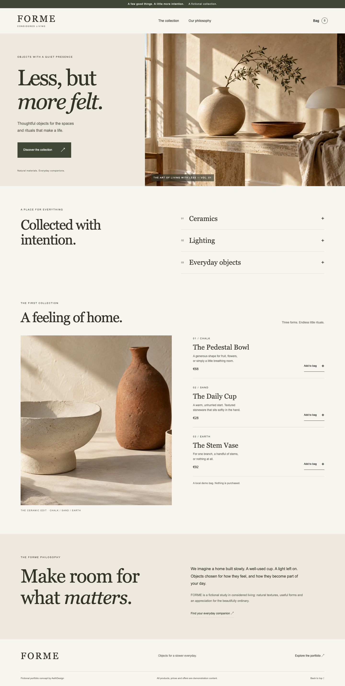

Single agentOpen concept

Engineering in public · 11 October 2026 · one paired pilot
A single agent and a bounded swarm each built a shop, a craftsman's site and a restaurant. Here are the actual fictional concepts—and the measured trade-off.
One run, with a shared 20-minute allowance per subject. Coding API equivalents exclude image generation and other tool charges. They do not measure subscription limits. Generated imagery differs, and cache warmth, service load and host activity are uncontrolled.
Considered living · ceramics and objects
Local craft · bespoke Berlin joinery
Hospitality · a seasonal Berlin restaurant
The swarm finished in 9m 19s; the control took 15m 52s. Every identified descendant was included in coding-session token totals. Each subject generated six native images—two per business—with no retries. The image tool did not provide generation tokens, a verified backend model or image pricing.
| Recorded measure | Single agent | Bounded swarm |
|---|---|---|
| Input, including cached | 1,654,596 | 2,901,229 |
| Cached subset | 1,530,624 | 2,686,592 |
| Output, including reasoning | 31,776 | 45,431 |
| Standard API coding equivalent | $0.7188 | $1.0374 |
| One blind reviewer's visual mean / 5 | 4.33 | 4.10 |
Both outputs passed identical two-width functional checks. A fresh anonymous reviewer preferred the control's mobile pacing and form composition. That qualitative judgment and the accounting describe this workload; they establish no general advantage or quality gain from delegation.
Read the protocol, routing, price basis, review and limitations ↗
These are frozen fictional benchmark artifacts. No post-run fixes were applied before grading. The original solvers' browser previews were sandbox-blocked; a separate Chromium evaluator inspected both afterward. Raw native session logs remain private.